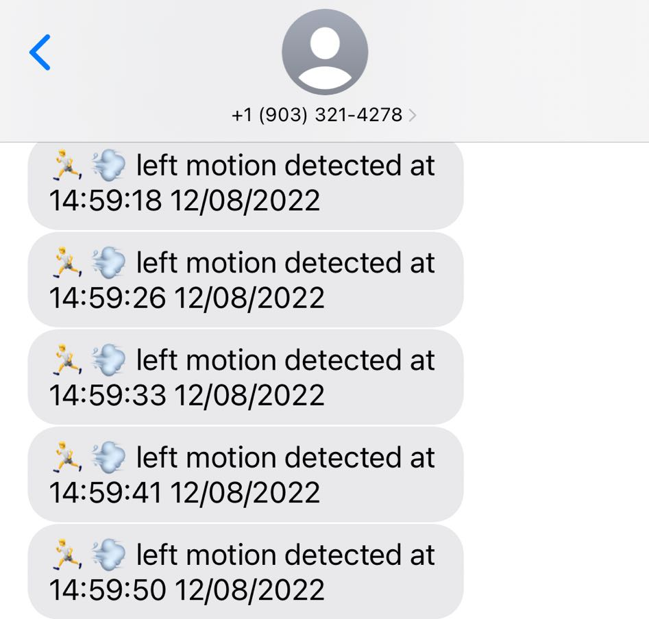

Monitoring System
ECE 5725 Fall 2022
Real-time Monitoring System with Autonomous Tracking, Streaming, and Smart Alert Functions
By: Zechen Wang(zw652), Zhongqi Tao(zt88)
Demonstration Video
Introduction
Taking care of baby has always a been difficult task for lots of families, regardless of their experiences in baby-sitting. Our project is to the rescue – it provides autonomous tracking functions to make sure that your babies are safely staying in their rooms.
With this application, parents would be able to monitor what's going on in babies' rooms whenever they feel necessary, with just a click in a browser. When you're busy working, the system can also autonomously focus the camera on babies and record pictures whenever there's a sound impulse or a crying sound. With additional protection of PIR motion sensors and our smart text alert system, you will know immediately on your phone when your babies try to leave the room. Our program also includes a user-friendly graphical interface on piTFT that anyone can learn how to use in a minute!

Project Objectives:
- Use a camera to autonomously track the position of a tag attached to the baby's wear when streaming video feed to a website.
- A set of motors that enables the camera to rotate both horizontally and vertically. The tag location information from camera will be fed to the motor controller to center the tag in the camera frame.
- Use a Microphone which processes sound inputs from its surroundings to detect whether there are unusual sound impulses in the environment.
- Include a set of PIR sensors in the system to detect motion passing through doors of a room / boundaries of a designated safe zone.
- Implement a smart text alert system to notify parents whenever there are suspicious activities(tags missing/sound impulses/PIR signals/etc.)
- Design a GUI on piTFT to let users manually toggle on/off functions according to their needs.
Design
There are three main functions of the system plus a pygame based interface to control these functions. Basically, the working principle of the system is demonstrated as the figure below shows, followed by the design procedure of each function described.
Camera
Our system is equipped with a camera for multiple purposes. The camera we used is the Raspberry Pi night vision camera, in order to support program function under different lighting conditions for 24/7 operation. The camera will have infrared emitters turned on all the time, which would not affect its operation under normal lighting conditions, and could improve its performance under low light condition with no switching time. We want the camera to be able to rotate itself to provide autonomous tracking functions, so we added a camera mount with two servo motors, so that it could rotate both horizontally and vertically.
With the camera installed in our system, we want to achieve both live streaming and automatic baby detection. Starting with live streaming, we deployed a flask server to publish the video feed we get from the camera input. Since we are also using the same camera feed to processing purposes, and to account for different colors being displayed when lighting condition changes, we are displaying all videos in greyscale. The flask server simply receives the frame information from the camera, and publishes it on a webpage accessible from a port number on localhost. In order for users to access it, they need to be on the same local area network, but it could potentially be expanded to be a cloud server hosting the webpage so that the video feed could be accessible from anywhere. On the website interface, there is also a "Take picture" button so that users could used to manually save screenshots on the SD card of Pi so that they could retrieve later.
Subsequently, we have the automatic baby detection function. We decided to use visual indicators to help us tracking the exact location of the baby so that tracking works under all lighting conditions. We are using a tag system named "Apriltag", which is a QR-code like system that can be easily recognized from distance. By using the video stream we're publishing onto the webpage, we process the video data frame-by-frame in real time to see if there are any tags detected. As soon as we see a tag in the frame, we would try to center it by rotating the two servos. Specifically, we are controlling the servos with hardware PWM for better stability.
Sound Detection
We have a microphone component in our system, which continuously samples signal from the environment and performs signal processing. Specifically, we are using the python library "sounddevice" to collect raw microphone readings and perform Fast Fourier Transforms to get the frequency domain signals. The microphone component is the following hardware connected to USB port of our system:
With signal processing, we want to eliminate environmental noises so that we do not count part of the persisting noise as part of the "sudden impulses". In order to achieve that, we implemented a band-pass filter that only the middle 80% of frequencies would be count as valid signals. After filtering, we perform inverse FFT to revert the signal back to time domain, and inspect if there are sudden changes in signal strength over time. We compare each data point with the average intensity of the sample, and see whether it is above a scalable threshold (such as 50x average intensity).
As soon as a sound is impulse is identified using our processing pipeline, our system will attempt to send a text message to a preconfigured recipient to notify that there is sound impulse in the environment using a text API. It will also take a picture and save it locally on the SD card, which the user could use our interface to view on the piTFT screen later. The mechanism is that the process responsible for microphone inputs will communicate using a FIFO with another process that is reading camera frames. As the camera process receive the take photo instruction, it will complete the capture and save procedure. Details of the interface for photo viewing will be introduced later in the "interface" section.
SMS
We used the TextBelt API to send messages to our users. With a preconfigured profile of our user’s phone number, and out API key, we will be able to send a text message with customized contents with simply an HTTP request to the API server.
Motion Detection using PIR sensors
The third function of the system is to limit an area where the baby can move and play freely, while as soon as the baby is moving out of regulated area, parents can get alert by text message. To realize this function, two PIR sensors are used to provide left and right boundaries of the playground and the function to send text messages is just the same as the one used in previous part.

PIR motion sensors (Passive Infrared Sensor) are used to detect motions in a certain area. Instead of emitting radiation, it actually detects the changes in infrared radiation of the source and once the change is detected, it generates a digital high output signal. Based on its working principle, "interrupt" can be implemented on the GPIOs connected to the two PIR sensors in response to the digital signal change. Functions are defined respectively for left and right PIR sensors to send text messages to parents. If the rising edge of GPIO connecting to PIR sensor is detected, it means there has been a motion across that sensor, hence corresponding function can be called to send text message, as figure below shows the messages sent from left and right motion sensor respectively.
Pygame Interface
To control the functions mentioned above individually, a pygame based interface is designed and "pm2" process manager is implemented to start and shut down the function scripts.
"pm2" is a production process manager which can run and stop scripts by sending commands in console window accordingly. The scripts of these three functions are firstly added to the "pm2" list so that they can be controlled by "pm2" directly.
The UI is designed as shown below, where each button can send "pm2" command to the console window to start running the script for each function if the toggle button under function name is clicked to be ON. If the button is clicked again to be OFF, command will be sent to console window to stop running the corresponding function script. However, the scripts will not be removed from the "pm2" list to ensure that "pm2" can always control these scripts through pygame interface.

Apart from the three toggle buttons to run and stop function scripts, the "view photo" button on the left bottom corner can view the photo took when the loud sound is detected by sound detection function.
After the button is clicked, the photo is shown in the middle and the "back" button on the bottom can back to the previous main menu.
The quit button can stop all the running function scripts, quit the UI and back to the console window.
Testing
We encountered many problems when we finished development of each function and trying to integrate them together. We had to go back and modify implementation of some functions, and eventually formed the designs of the system as mentioned before.
Problem description:
Initially, we decided to develop and test each function separately and include all of them into a main script's forever while loop, plus a keyboard interrupt or quit button which can end the main function. This means all the three functions of our system have to run and shut down simultaneously.
However, as mentioned in the sound detection script, we implemented 'sounddevice' library to define a function to record and process audio information every second, and invoked that function in a loop. The library has a property that when it is recording audio in the regulated time, it blocks the script at the line which performs recording while stops executing all the following codes.
This property brought to a problem that if the scripts for all the functions are integrated in a same main script, the other functions have to stop running and wait until audio recording in sound detection function has finished.
Solution:
To address the problem, multithreading came up to our mind which means scripts for each function can run individually instead of integrating them into a single main script, so that the recording part in sound detection script would only block the script itself, which is exactly what we intended, since following signal processing part must wait until the recording of audio information has finished.
While multithreading also means that sound detection script has no direct access to the camera streaming script to take a photo when loud sound has been detected. Therefore, a thread event was added and if the loud sound is detected, the event can trigger camera script to capture a frame.
Problem description:
As mentioned in the 'track and stream' function, we are using a flask app to stream the live video to a html so that users can get access to the live stream through any mobile devices connected to the same local area network. However, the host function which turns on the html website could not be triggered via a defined thread, which means even though the camera is proper functioning, users are not going to get access to the captured frame from mobile devices.
Solution:
Eventually, we had to give up using multithreading to run different functions individually. Instead, we used the process manager application "pm2" to control the scripts. The scripts were added to the list of "pm2" manager so that they are always in the backstage waiting to be invoked. By implementing corresponding commands, each script can start to run and stop individually. Therefore, both blocking issue and compatible issue were addressed.
Results and conclusions
Fortunately, everything we had completed worked well with no significant issues. While there are still some flaws which can be further improved:
1. Tracking and stream function: The html website displaying live video must be open on a device so that the camera will turn on. If the website is off, the camera is closed as well.
2. Sound detection function: In the 'sound detection' function, when a loud sound is detected, the camera must be on so that it can store a photo, which means without the 'live stream' function on, although 'sound detection' can still send text messages when a loud sound has been detected, it cannot take a new photo and the photo displayed on the piTFT when clicking 'view photo' button is the last stored photo.
3. Night vision camera: The night vision camera has a pair of infrared light on both sides of the camera which are always turned on. Although the infrared radiation can help illuminate environment when light condition is poor so that the system can get visible frames during night, infrared also results in color aberration during daytime which can affect accuracy of Apriltag detection. Eventually we had to convert frames from RGB to grayscale to ensure better Apriltag tracking.
Future work
If given more time, we definitely would like to address the flaws mentioned above. We can separate the camera and tracking part from the streaming part so that no matter whether the website is turned on or off the camera is always turned on and tracking the Apriltag, preventing camera from losing target if it restarts.
Besides, we can create a album to store all the photos taken when loud sound is detected instead of just storing the most recent one.
Finally, we can implement a better night vision camera which can adjust infrared light based on light condition. In this way, we can stream colorful video during daytime to improve user experience.
Work Distribution
Zechen Wang
zw652@cornell.edu
Designed overall software architecture, audio processing technique and pygame interface, implemented Apriltag and SMS. Tested and debugged overall system.
Zhongqi Tao
zt88@cornell.edu
Designed overall software architecture and audio processing technique, conducted hardware connection and integration, implemented video streaming and servo motor control. Tested and debugged overall system.
Parts List
| Components | Cost | Number | Total Cost |
|---|---|---|---|
| Raspberry Pi 4 upgrade | $ 45.00 | 1 | $ 45.00 |
| Night vision camera | $ 25.00 | 1 | $ 25.00 |
| PIR sensor | $ 5.75 | 2 | $ 11.50 |
| USB microphone | $ 3.99 | 1 | $ 3.99 |
| Servos, piTFT, Resistors and Wires | Provided in lab | ||
| Final Cost | $ 85.49 |
References
[1] Image classification researches using CNN[2] Dependency reference
[3] pi-camera-stream-flask
[4] Working Principle of PIR sensors
[5] Process Manager pm2 Introduction
[6] TensorFlow & Keras installation
[7] TextBelt API
[8] Pigpio Library
[9] R-Pi GPIO Document
[10] Tower Pro Servo Datasheet
[11] Apriltag Reference
[12] This HTML Template provided by Joseph Skovira
Code Appendix
View on GitHub